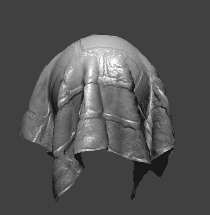

OVERVIEW :
In this project, we embarked on an in-depth exploration into cloth simulation, crafting a comprehensive system that traversed through layers of complexity, from the foundational grid of masses and springs to the nuanced application of shaders for realistic rendering. We initiated our journey with the construction of a grid in Cloth.cpp, where each point mass was carefully positioned and pinned. This foundation allowed us to dive into the simulation, employing the simulate method to iteratively update point mass positions through the principles of Verlet integration and the careful calculation of forces, both external like gravity and internal from spring corrections according to Hooke’s law. Progressing further, we tackled the challenges of collision handling, enabling our cloth to interact realistically with spherical and planar objects within its environment, a task that proved its worth in adding depth to the simulation. The realization of self-collision functionality introduced an additional layer of realism, optimizing computational efficiency through a spatial map to manage the interactions of closely positioned point masses. The culmination of our project was marked by the sophisticated implementation of shaders, starting from diffuse shading to the Blinn-Phong reflection model, each step meticulously designed to enhance the visual realism of our cloth. This progression not only involved the technical application of textures and bump mapping but also demanded a keen eye for detail to overcome obstacles such as the misdirection of surface normals, ensuring that every fold and crease of our cloth was rendered with the utmost fidelity.
In part 1, our goal was to build a grid of masses and springs given a json representation of the cloth. We implemented the function buildGrid in the Cloth.cpp file. We iterate through all the point mass positions and generate the point masses while setting their positions and pinning them when necessary. This part had no major problems as it required carefully following the spec.
In part 2, we implemented the simulate method. Our program repeatedly called this method to iteratively update the positions of the point masses using the springs constraints and velvet integration. To accomplish this feat, we first compute the total force acting on a point mass. There are two types of forces, external (which uniformly affect point masses e.g. gravity) and spring correction forces. To calculate the spring correction forces we used Hooke’s law. After, we utilize velvet integration to compute the new point mass positions. Finally, to have the point masses accurately simulate a cloth, we place constraints for the length of each spring modifying the mesh if the constraints are failed. For some time, our cloth was barely moving unless we used a damping coefficient of 0, we reread the spec and figured out that we missed dividing the coefficient by 100.
In part 3, we wanted to have the cloth colliding with two objects: spheres and planes. We implemented the collide method in both objects which updates the position of a point mass if it interferes with the object. To reap the benefits of the collide method, we called it on each point mass iteratively updating the position of each point mass with relation to every object in the scene. There was a problem with the collision when the point masses spawned in at height zero, they would fall under the plane and all other points would remain over the plane. This was because in my collide method, the conditions for being on the positive side should have been inclusive of zero. If it doesn’t include zero, then the points spawned in at height zero would be separated from all the other points that are created on the positive side.
In part 4, the feature that was added is self Collision. This consisted of iterating over all possible pair of point masses checking if they are within a certain distance from each other. If they are within a certain distance then we would correct the positions of the nonpinned point mass/es. This algorithm takes too long and must be optimized using a spatial map. The map divides up space into identical blocks that don’t overlap each other. Then, We run the self collide algorithm on all pairs where the point masses fall within the same block. This spatial map maps a coordinate to a vector that stores point masses that fall within the same block. This part was simple and was simpler then the other parts but included hashing which we haven’t implemented until this point.
In part 5, we begin with implementing diffuse shading. In this task, the vertex shader processes model space attributes and transforms them into worldspace for the fragment shader. Then the fragment shader calculates the color of every pixel based on the light’s intensity, it’s position relative to the pixel, and the normal direction. We do this using the diffuse lighting formula that considers the angle of the light relative to the surface normal and attenuates the light based on the squared distance from the light source to the surface. Then in the next task, we enhance the realism of our shader using the blinn-phong reflection model which adds specular reflections to the diffuse and ambient lighting components we established in the previous part. Phong.frag calculates the ambient, diffuse, and specular lighting based on surface normals, light position, and camera position. We also adjust each compenement’s intensity according to specified coefficients. In the next part we apply texture to surfaces by sampling color data from a 2D texture map based on UV coordinates. The sampled color is directly used as the fragment’s color output. Then to achieve bump mapping, we alter the perceived surface normals of objects based on a height map texture to simulate detailed bumps and textures without changing any underlying geometry. We calculate the gradients of the heightmap at each fragment's UV coordinates to get a new normal in tangent space and then transform that back to model space using the TBN matrix. Then in displacement mapping, we directly modify the vertex positions of a mesh based on a height map texture. We achieve this by calculating the displacement for each vertex using the height value from the proved texture, vertices are moved along their normal vector to create geometric detail. Finally, in task 5, to achieve environment mapped reflections, the shader computes the reflection vector of the view direction off the surface normal. This represents how a perfectly reflective surface would interact with its environment. The reflection vector is then used to sample from a cube texture. The main trouble with this part of the project was a bug we had in the cloth simulator that was outputting surface normals inwards instead of outwards, so our cloth was not being colored correctly.
Part 1 :
Take some screenshots of scene/pinned2.json from a viewing angle where you can clearly see the cloth wireframe to show the structure of your point masses and springs.
Show us what the wireframe looks like (1) without any shearing constraints, (2) with only shearing constraints, and (3) with all constraints.
- No sheering
- With only shearing
- With all constraints
Part 2 :
Experiment with some the parameters in the simulation. To do so, pause the simulation at the start with P, modify the values of interest, and then resume by pressing P again. You can also restart the simulation at any time from the cloth's starting position by pressing R.
Describe the effects of changing the spring constant ks; how does the cloth behave from start to rest with a very low ks? A high ks?
The effects of changing the spring constant increases the resistance of the springs to compressing and expanding. This is emphasized by the cloth bending more as you decrease Hooke’s constant.
What about for density?
As you increase the density the mass of the cloth increases, and in the case of pinned2 the cloth’s final resting position hangs lower when the mass is higher. This is because more force from the springs need to be applied to counteract the gravity and end in a static equilibrium. This higher tension on the springs causes them to elongate.
What about for damping?
Damping is one of the ways the cloth dissipates energy. Higher damping values lead to a quicker reduction in the oscillation and movement of the cloth, making it settle faster but potentially stifling some of the more fluid and realistic behaviors. Lower damping allows the cloth to oscillate more freely, which can result in more dynamic and realistic movements but may also cause the cloth to take longer to come to rest. The damping value should depend on what type of cloth you are trying to simulate.
For each of the above, observe any noticeable differences in the cloth compared to the default parameters and show us some screenshots of those interesting differences and describe when they occur.
- All values are default but density is lowered to 1.
- All values are default.
- All values are default but the density is increased to ten thousand.
The springs in the cloth have a lower mass to support, making them less tensioned. When springs are less tensioned, they will converge in a retracted state.
The springs in this case have to carry 10 times more mass. That is visible on the top side of the cloth.
In this case, the mass was increased so that the cloth was visibly tensioned and hanging lower.
As you increase the density of the cloth the center of mass of the cloth will converge lower.
Show us a screenshot of your shaded cloth from scene/pinned4.json in its final resting state! If you choose to use different parameters than the default ones, please list them.
Part 3 :
Show us screenshots of your shaded cloth from scene/sphere.json in its final resting state on the sphere using the default ks = 5000 as well as with ks = 500 and ks = 50000.
ks = 5000 ks = 500 ks = 50000
Describe the differences in the results.
It seems that as Hooke's constant decreases, the number of folds in the cloth increases. This phenomenon occurs because the lower the constant, the springs in the cloth will be more likely expand to their max constraint. The lack of resistance in the springs will cause the folds to occur more sparingly.
Show us a screenshot of your shaded cloth lying peacefully at rest on the plane. If you haven't by now, feel free to express your colorful creativity with the cloth! (You will need to complete the shaders portion first to show custom colors.)
Part 4 :
Show us at least 3 screenshots that document how your cloth falls and folds on itself, starting with an early, initial self-collision and ending with the cloth at a more restful state (even if it is still slightly bouncy on the ground).
Vary the density as well as ks and describe with words and screenshots how they affect the behavior of the cloth as it falls on itself.
initial |
medial |
final |
|
|---|---|---|---|
initial conditions |
|||
decreased density |
|||
increased density |
|||
decreased spring constant |
|||
increased spring constant |
Part 5:
Explain in your own words what is a shader program and how vertex and fragment shaders work together to create lighting and material effects.A shader program is a program that is meant to run on the graphics processing unit (GPU) to manage the rendering process through the process of performing operations on graphics primitives and pixels. This is how we were able to write code to influence how surfaces respond and interact with light and the texture of objects. The shader programs are usually comprised of vertex shaders and fragment shaders The vertex shader is the first stage of the shading process. It operates on each vertex of the 3D geometry that we are rendering. The main purpose is to do operations that affect vertex characteristics like position, color and the normal vector. The fragment shader mainly determines the color or other attributes of a pixel through applying lighting and material and texture properties to fragments that have information such as position, depth, texture, and color. Fragment shaders are where the more detailed effects are computed such as blinn-phong shading, texture mapping, bump mapping, etc. these shaders compute how light interacts with the surfaces, shadows, transparent, etc. to produce more realistic rendered effects. These two shaders work together through the following process: The vertex shader receives input vertices and does pre-vertex operations such as transformations and lighting calculations. It outputs vertices with updated data such as position. Then these vertices are assembled into primitives (such as triangles), which are then converted to fragments for each pixel they cover on the screen. Then for each fragment, the fragment shader determines the final color based on the material properties, lighting, and texture. The fragments then get merged to the framebuffer.
Explain the Blinn-Phong shading model in your own words. Show a screenshot of your
The blinn phong shading model attempts to approximate how light reflects off surfaces to the camera/ viewing eye. The blinn phong shading is composed of three major components: ambient, diffuse, and specular lighting: The ambient lighting is a constant lighting applied to all of the surfaces in the scene similar to the effect of indirect lighting bouncing off of objects. This makes sure that areas not directly hit by the light sources are not completely dark. It is calculate as follows: K_a*I_a where K_a is the ambient reflectivity of the surface and I_a is the ambient light intensity. Diffuse light shading simulates uniform scattering of light in all directions. It is dependent on the angle between the light source and the surface normal. It is computed as follows: K_d *(I/r^2)*max(0, dot(n,l)) where K_d is the diffuse reflectivity, I is the light source intensity, r is the distance from the light source to the surface, n is the normalized surface normal, and l is the normalized vector pointing from the surface to the light source. Specular lighting simulates the bright reflection on shiny surfaces. It depends on the viewer/camera position and the surface roughness. Blinn-phong shading uses the bisector vector of the light direction and the view direction. It is calculated as follows: K_s*(I/r^2)*(max(0,dot(n,h))^p, where K_s is the specular reflectivity, p is the shininess factor which controls the size of the specular highlight, and h is the normalized bisector of the viewing direction v and the light direction l. In our implementation of Blinn-Phong shading: We calculate an ambient term based on ambient strength and color. We set our K_a to 0.1. K_a is the ambient reflectivity which determines how much ambient light a surface reflects. A higher K_a means the surface will appear brighter in ambient light whereas a lower value makes the surface darker. 0.1 as K_a implies 10% of ambien light is reflected. We then initialize an Ambient color vector which represents the color of the ambient light in RGB format. We then get our ambient factor by multiplying the ambient strength by the ambien color which gives us the final ambien light contribution of the surface. To compute diffuse, we take the dot product of the normalized surface normal and the normalized light direction and attenuate it based on the square of the distance to the light source The specular term is then computed using the dot product of the surface normal and the bisector between the view and light directions. We then raise this to a specular exponent and attenuate by the distance to determining the specular highlight strength The resulting color of a fragment pixel is the sum of the tree components and we modulate it by the surface color (u_color)
Show a screenshot of your Blinn-Phong shader outputting only the ambient component, a screen shot only outputting the diffuse component, a screen shot only outputting the specular component, and one using the entire Blinn-Phong model.
Show a screenshot of your texture mapping shader using your own custom texture by modifying the textures in /textures/.
Show a screenshot of bump mapping on the cloth and on the sphere. Show a screenshot of displacement mapping on the sphere. Use the same texture for both renders. You can either provide your own texture or use one of the ones in the textures directory, BUT choose one that's not the default texture_2.png. Compare the two approaches and resulting renders in your own words. Compare how your the two shaders react to the sphere by changing the sphere mesh's coarseness by using -o 16 -a 16 and then -o 128 -a 128.
Bump mapping approach: Firstly, h(uv) samples the height from a texture at a given UV coordinate. Using that function, we calculate the heights around the current fragment’s UV coordinate (left, right, up, down). We then scale these values by u_height_scaling to control the intensity of the effect Then by subtracting the heights on the opposite side (left-right and up-down), we calculate the gradients along the U and V directions. The gradients represent how rapidly the height changs in each direction, which gives us a way to modify the normals based on the texture. We scale the gradient vectors by u_normal_scaling to control the magnitude of the normal perturbation The cross product of dU and dV gives a new normal vector in the tangent space. We then normalize this normal, which represents the perturbed surface normal. Then the perturbed normal in tangent space is converted to model space using the TBN matrix composed of the tangent, bitangent, and original normal vector. Multiplying the new normal by this matrix transforms it into model space, allowing it to be used in our lighting calculations. We then proceed to use phong reflection code from the previous part. Bump mapping results: Displacement mapping: This shader uses the same frag code as bump, but the following is our approach to the vert code: we similarly define a function h(uv) to sample the displacement/height value from a texture. The height map helps us determine the displacement for each vertex according to the texture. For each vertex, we calculate the displacement by multiplying the sampled height value by u_height_scaling, which is a uniform variable that gives us control over the strength of the displacement effect. Then we create a displaced position by adding the original position of the vertex to its normal scale by the displacement value. The essentially moves the vertex along its normal by the defined among, which physically alters the geometry of the mesh. The displayed vertex position is then transformed from local space to model space. The shader then outputs the displaced position, the transformed tangent vectors, the UV coordinates, and the transformed normal. The normal and tangent vectors are normalized to make sure they remain unit vectors after transformations. Finally, we set gl_positon by transforming the displaced vertex position into clip space using u_view_projction matrix which determines where the vertex will appear on the screen. Approach comparison : Both are techniques used to add visual detail to the 3D models. Bump mapping simulated surface detail by modifying the normals of a surface at the pixel level during the shading process, it does not alter the geometry itself. Instead we modify how light interacts with the surface to create an illusion of depth. On the other hand, displacement mapping will physically alter the geometry of the surface. The vertices of the mesh are moved along their normal vectors by the amount given by the displacement map. Displacement and bump Results and comparison : Bump mapping creates textures that are detailed and appear to have the desired texture from most angles, but since the geometry never changed, the silhouette of the edges do not reflect the desired surface details. This means the sort of illusion ends at extreme angles and edges. Displacement mapping produces geometric changes that give a silhouette with true depth. This creates a highly realistic render of the surface of an object. Comparison of coarseness renders At low resolution, bump mapping still effectively simulates surface detail because it operates at the pixel level, but the silhouette remains unchanged. On the other hand, displacement mapping at a low resolution does not produce an accurate shape because of the limited number of vertices to displace. The changes in the spheres’s silhouette and surface appear blocky and overly simplified due to the lack of vertices. At higher resolutions, bump mapping is not inherently affected since the technique did not alter the geometry. The perceived detail seems to remain consistent with the low resolution mesh, with a similar unchanged silhouette. On the other hange, at a higher resolution, displacement mapping is significantly enhanced as it more accurately represents the imagined object. With more vertices, the displacement map can accurately modify the geometry to represent the detail of texture. This gives a sphere that appears textured and has an accurate silhouette.

Show a screenshot of your mirror shader on the cloth and on the sphere.